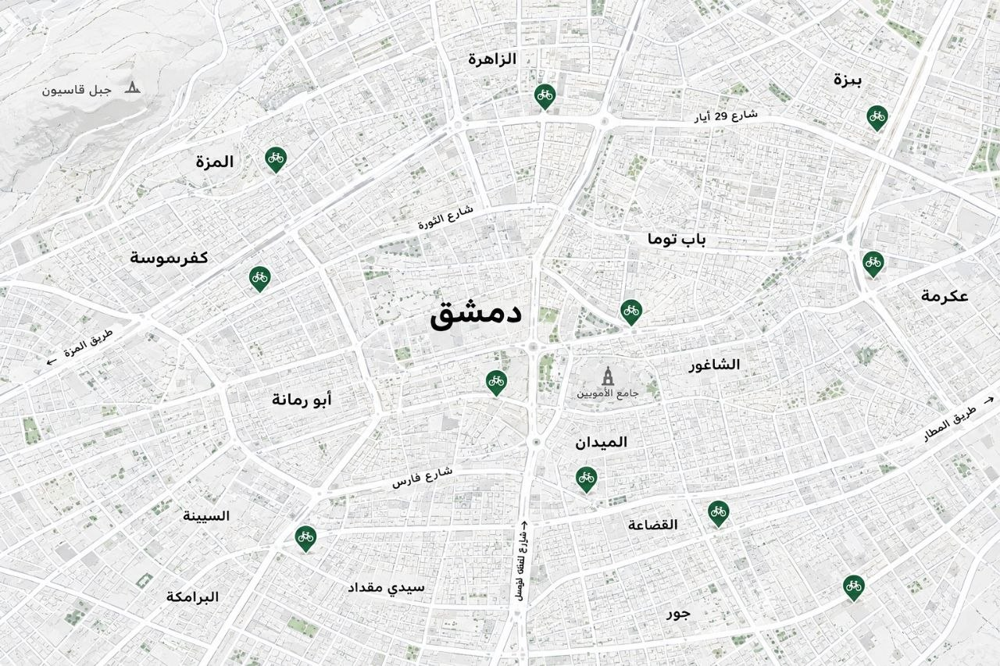

دواسة — دراجتك في كل محطة
منصة رقمية لتأجير الدراجات الهوائية عبر شبكة محطات منتشرة في المدينة. احجز دراجتك، امسح رمز QR، وانطلق — وأعدها إلى أي محطة شريكة.

تنقل اقتصادي بدون امتلاك دراجة
امتلاك الدراجة وصيانتها مسؤوليتنا — أنت تدفع فقط مقابل مدة استخدامك. شبكة محطات مرنة تتيح لك البدء من مكان والإنهاء في آخر.
حجز فوري عبر QR
احجز دراجتك من التطبيق، واحصل على رمز QR واحد يُستخدم عند البدء وعند الإرجاع.
تسعير واضح
60 ل.س للساعة الأولى، و25 ل.س لكل ساعة إضافية. تابع التكلفة لحظيًا أثناء رحلتك.
محطات متعددة
40 محطة منتشرة في دمشق. ابدأ من محطة وأعد الدراجة إلى محطة أخرى بكل سهولة.
كيف تعمل دواسة؟
من البحث عن محطة إلى الدفع النقدي — رحلة بسيطة وآمنة
ابحث عن محطة
افتح التطبيق وشاهد المحطات القريبة مع عدد الدراجات المتوفرة والمسافة.
احجز دراجة
اختر الدراجة المناسبة واحصل على QR. لديك 3 دقائق للوصول إلى المحطة.
امسح وانطلق
يعرض موظف المحطة QR ويؤكد بدء الإيجار. تبدأ مدة الرحلة والتكلفة.
أعد وادفع
أعد الدراجة إلى أي محطة، امسح نفس QR، وادفع نقدًا للمحطة.
محطات منتشرة في دمشق
شبكة متنامية من المحلات الشريكة التي تستلم وتسلّم الدراجات
استكشف المحطات القريبة منك عبر تطبيق دواسة — مع معلومات التوفر وساعات العمل والمسافة.
جاهز لرحلتك القادمة؟
حمّل تطبيق دواسة وابدأ استكشاف دمشق على دراجتك.